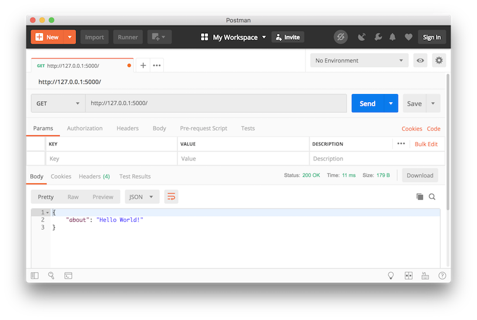
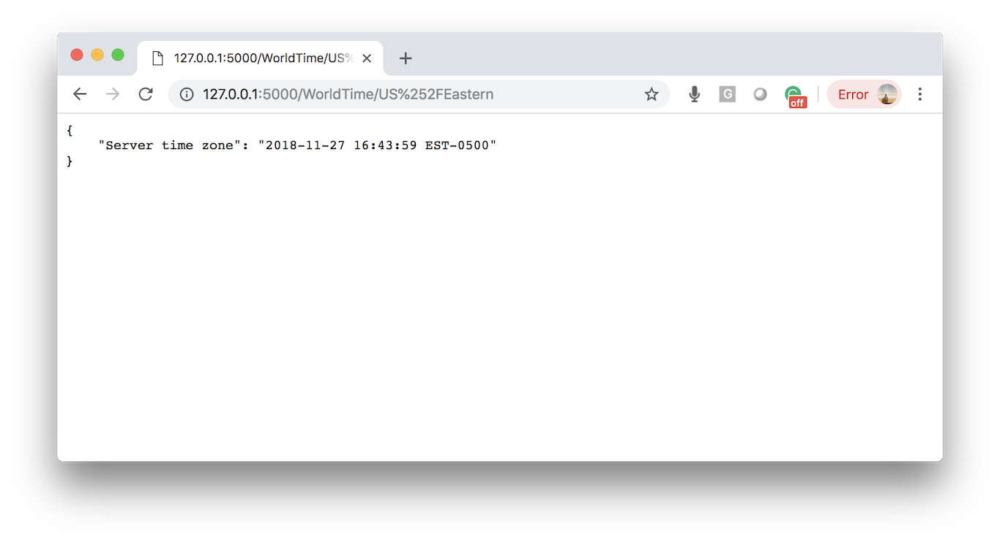

The Python and Flask Rest API, Abstracting Functions for Web Applications and SaaS

Let's Abstract Functions using Rest APIs and Extend Your Web Applications and Saas
The Restful API (or REST API) is based on the representational state transfer architecture, a definition of data interoperability over the Internet using web services. In simple terms, it uses a set of commands such as get, post, delete, update, etc. and passes the data over the internet atop the HTTP protocol. This allows it to piggyback over an existing technology normally used to generate web pages. This technology can be very useful to abstract complex processing away from a web application's code. It can even allow you to bring in advanced predictive analytics and machine learining into simple sites like GitHub.io Pages or WordPress pages.
To learn about REST APIs, let’s build a simple project using Python, Flask, pytz, flask_restful and Postman. I am going to assume you have done some simple Flask before, if you haven’t, go over to the official Flask documentation and go through the first example.
Install flask-restful and Postman
Install the flask-restful library by running the below command in your terminal window. This Flask extension will abstract a lot of of the coding and best practices for our REST API for us (such creating classes and adding resource API end points).
$ pip install flask-restful
Install the free version of Postman at getpostman.com. This tool allows you to easily test your API points and a whole lot more.
A Simple Example
Enter the following code, save it to your local machine as 'main.py' and kick off a Flask session (run python3 main.py):
from flask import Flask, request
from flask_restful import Resource, Api
app = Flask(__name__)
api = Api(app)
class HelloWorld(Resource):
def get(self):
return {'about': 'Hello World!’}
api.add_resource(HelloWorld, '/‘)
if __name__ == '__main__':
app.run(debug=True)
Run the above example in Postman:

The pytz Library
Here we will use the pytz library to access current times in different times zones. You can play around with this library with the following code:
from datetime import datetime import pytz utc = pytz.utc # get your local time zone print(utc.zone)
UTC
# print last 15 time zones from full time zone list print(pytz.all_timezones[-15:])
['US/Arizona', 'US/Central', 'US/East-Indiana', 'US/Eastern', 'US/Hawaii', 'US/Indiana-Starke', 'US/Michigan', 'US/Mountain', 'US/Pacific', 'US/Samoa', 'UTC', 'Universal', 'W-SU', 'WET', 'Zulu']
# get local time in Amsterdam amsterdam = pytz.timezone('Europe/Amsterdam') amsterdam_now = datetime.now(amsterdam) fmt = '%Y-%m-%d %H:%M:%S %Z%z' print('Amsterdam time:', str(amsterdam_now.strftime(fmt)))
Amsterdam time: 2018-11-28 01:14:30 CET+0100
And Now for a More Involved Example
Replace your previous 'main.py' code with following code:
from flask import Flask, request
from flask_restful import Resource, Api
from datetime import datetime
import pytz
from urllib.parse import unquote
app = Flask(__name__)
api = Api(app)
class WorldTime(Resource):
def get(self, timezone):
timezone = unquote(timezone)
if timezone in pytz.all_timezones:
tz = pytz.timezone(timezone)
tz_now = datetime.now(tz)
fmt = '%Y-%m-%d %H:%M:%S %Z%z'
return {'Server time zone': str(tz_now.strftime(fmt))}
else:
return {'Server time zone': str(timezone)}
api.add_resource(WorldTime, '/WorldTime/')
if __name__ == '__main__':
app.run(debug=True)
To test it out, you can enter the below URL in either Postman or your browser. Note that we are encoding the forward slash for "US/Eastern" with double forward slash %252F to not confuse the URL:
http://127.0.0.1:5000/WorldTime/US%252FEastern

Thanks for reading and please share!!!
Manuel Amunategui - on Twitter: @amunategui
Author: Monetizing Machine Learning, Curator of amunategui.github.io and ViralML
{% include mid_point_ad.html %}